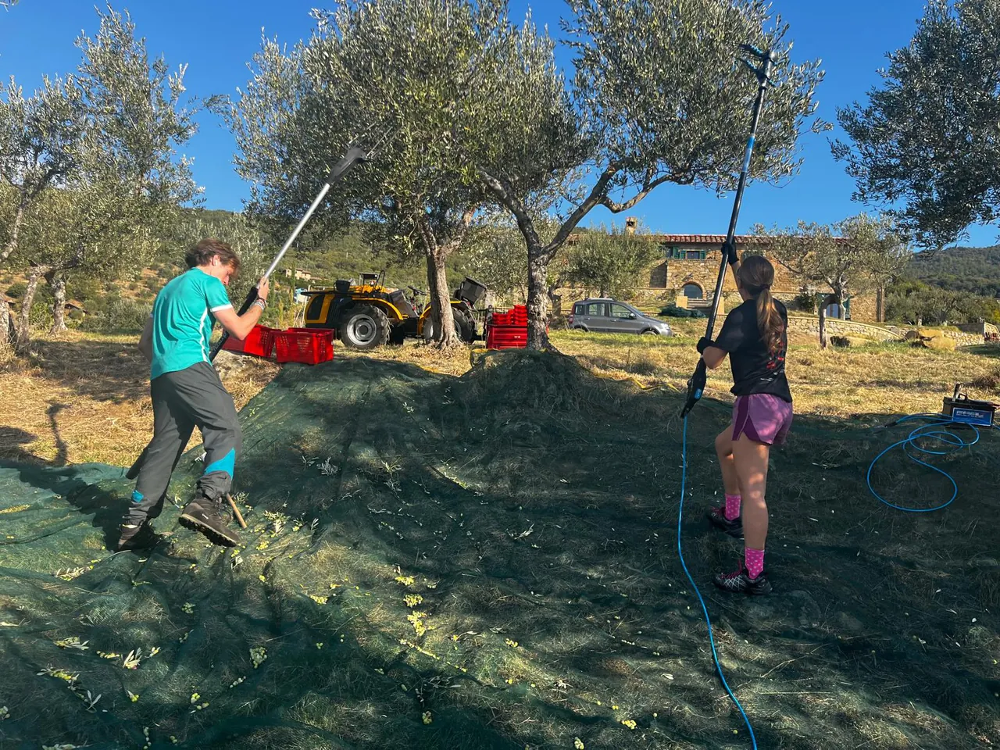
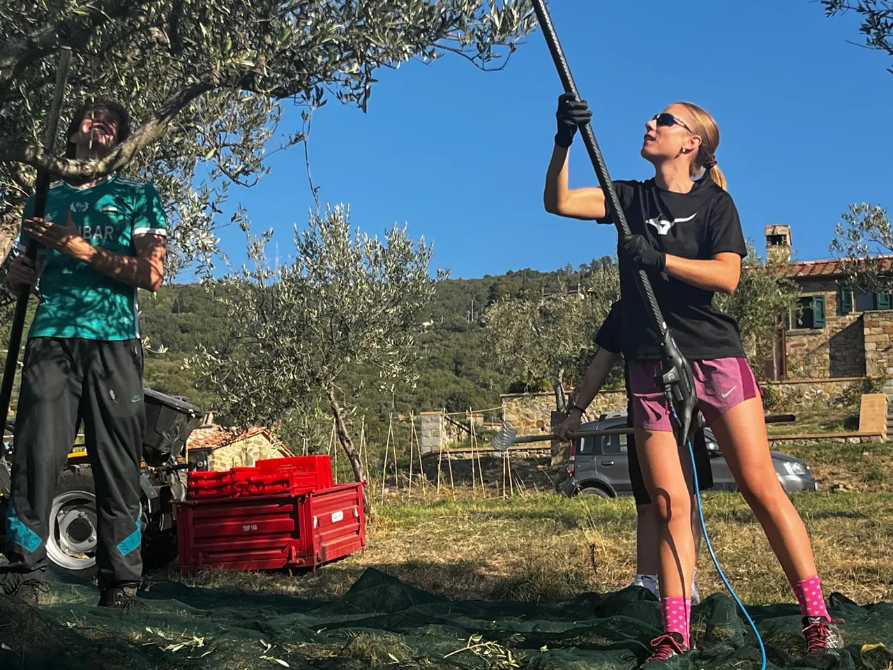
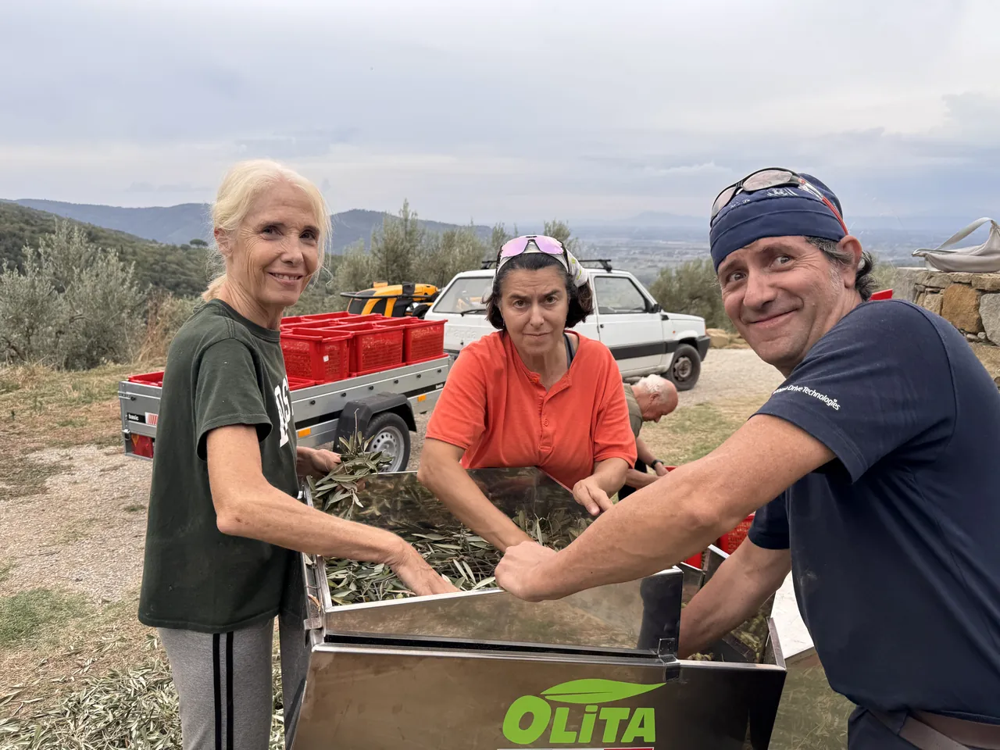
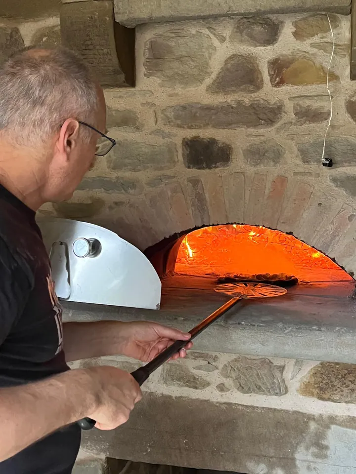

Vita a Casa Isabella · 2026
La raccolta delle olive
A Casa Isabella la raccolta delle olive è un pezzo di vita condivisa. Gli ospiti partecipano al lavoro tra gli ulivi: si stendono le reti, si raccolgono le olive e si fa fatica insieme. Poi arrivano le pause, gli amici e il piacere di ritrovarsi a tavola.
Conoscere le persone, il luogo e il lavoro che stanno dietro a ogni raccolto cambia anche il modo di gustare l’olio. Le fotografie della raccolta 2026 raccontano questo percorso, fino al forno acceso e alla pizza preparata da Giovanni per 15 persone.




